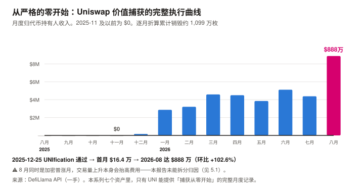
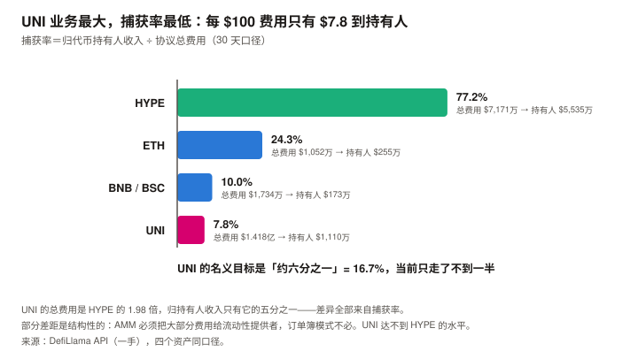
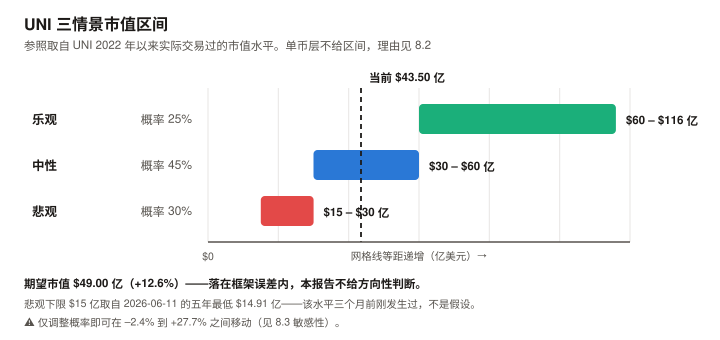

UNI / Uniswap 完整调研与分析报告
编写日期：2026 年 9 月 6 日
数据截止：2026 年 9 月 6 日（8 月完整月度数据已闭合）
研究方法：沿用本系列前六期框架（BTC / ETH / SOL / ADA / BNB / HYPE）。
本期的独特之处：UNI 是本系列覆盖的资产里唯一一个刚刚完成价值捕获机制切换的——
2025 年 12 月之前它归持有人的收入是严格的零，之后开始销毁。本报告因此能观察到一个完整的「从零到有」过程。
本期为 UNI 首期报告。本期核心发现：
① UNI 现价 $6.98，市值 $43.50 亿（全球第 24），FDV $62.16 亿。距 ATH $44.92（2021-05-02）–84.47%；
② 2026 年 6 月 11 日它创下五年市值新低 $14.91 亿（低于 2022 年熊市底的 $16.35 亿），此后反弹 191.4%；
③ fee switch 的执行过程可以被完整看到：2025 年 11 月及以前归持有人收入为 $0，2025-12 首月 $16.4 万，
2026-08 跳升至 $888.2 万，是 7 月的 2.03 倍；
④ 销毁在真实执行，量级已验证、精度未验证：初始上限 10 亿 − 当前总供应 8.905 亿 = 已移除 1.095 亿枚（其中 1 亿为国库一次性销毁，⚠️ 二手）。
用逐月收入 ÷ 逐月均价折算得约 1,099 万枚，与残差 954 万枚差 +15.2%——同一量级，但不精确吻合（差异原因见 4.2，最可能是未核实的年度增发条款）；
⑤ 但它的捕获率是本系列最低的：月度总交易费 $1.418 亿，归持有人仅 $1,110 万——捕获率 7.8%。
对照 HYPE 的 77.2%、ETH 的 24.3%、BSC 的 10.0%；
⑥ UNIfication 的名义目标是「约六分之一」（16.7%）——当前 7.8% 只走了不到一半。本期核心判断：UNI 是本系列见过的「最大的业务 + 最低的捕获率」组合，而捕获率正在快速提升。
它的月度交易费（$1.418 亿）是 HYPE（$7,171 万）的 1.98 倍，而归持有人收入只有 HYPE 的五分之一。
估值倍数因此在快速下降：按过去 12 个月实际为 151.0 倍，按最近三个月平均年化为 84.5 倍，按 8 月单月年化为 58.3 倍。免责声明：本报告不构成任何投资建议。所有分析仅供研究参考，投资决策请咨询专业顾问。
核心结论摘要（一页速览）
| 维度 | 核心判断 |
|---|---|
| UNI 是什么 | 去中心化交易所的龙头协议代币。 Uniswap 在全市场 DEX 成交量中占约 23.7%（V4 12.7% + V3 11.0%），月度交易费 $1.418 亿，是第二名 PumpSwap 的 1.58 倍 |
| 本期的独特之处 | 本系列唯一一个能观察到「价值捕获从零开始」全过程的资产。 2025-11 及以前归持有人收入严格为 $0；2025-12 起开始销毁 |
| 当前价格位置 | $6.98，市值 $43.50 亿（第 24），FDV $62.16 亿。距 ATH –84.47%，近 30 日 +73.48%，近 1 年 –25.05% |
| 一个必须先讲的事实 | 2026-06-11 创下五年市值新低 $14.91 亿——比 2022 年熊市底（$16.35 亿）还低。此后反弹 191.4%。fee switch 在 2025-12 就开启了，而价格又跌了半年（见 3.2） |
| 最强的一项 | 业务规模。 月度交易费 $1.418 亿，DEX 赛道第一；V4 单版本 $9,348 万已超过第二名 PumpSwap 的全部（$8,963 万） |
| 最弱的一项 | 捕获率 7.8%，本系列最低。 每 $100 的交易费，只有 $7.8 到达代币持有人，其余归流动性提供者 |
| 本期最重要的趋势 | 捕获率在快速提升。 归持有人收入：2026-02 $321 万 → 2026-08 $888 万（+177%）。8 月单月环比 +102.6% |
| 估值倍数（FDV 口径） | 过去 12 个月实际 151.0 倍；最近三个月平均年化 84.5 倍；8 月单月年化 58.3 倍。⚠️ 三个数字差 2.6 倍，口径选择极大影响结论（见 9.2） |
| 核心多头逻辑 | DEX 龙头地位稳固（份额 23.7%）；销毁已验证真实执行；捕获率距名义目标 16.7% 还有约一倍空间；距 ATH –84.47%，估值倍数在六个资产里偏低 |
| 核心空头逻辑 | 捕获率仅 7.8% 且提升路径依赖治理；PumpSwap 单协议费用已达 Uniswap 的 63%，赛道竞争激烈；8 月的跳升是单月现象，可持续性未验证；DEX 收入与加密交易活跃度强相关 |
| 风险等级 | 中等偏高。它的核心不确定性不是「业务会不会崩」（业务是六个资产里最稳的之一），而是「治理会把多少利益分给代币持有人」 |
1. Uniswap 的起源与设计取舍
1.1 一个把手续费全给了别人的协议
Uniswap 由 Hayden Adams 于 2018 年创建，是自动做市商（AMM，用算法池子替代订单簿撮合）模式的开创者与最大实现。
它的代币经济学在很长时间里是一个反面教材：
| 时期 | UNI 的经济属性 |
|---|---|
| 2020-09（发行）– 2025-11 | 纯治理代币。全部交易费归流动性提供者（LP），UNI 持有人分文未得 |
| 2025-12 至今 | 约六分之一的交易费导入协议，用于销毁 UNI |
这五年是一个罕见的自然实验：一个交易量全球第一的协议，
其代币与业务之间在经济上完全脱钩。UNI 的价格因此长期只反映预期，不反映现金流。
本报告能观察到的，正是这个脱钩被修复的过程。
1.2 UNIfication：2025 年 12 月的转折
提案内容（2025-12-25 通过，1.25 亿票赞成 vs 742 票反对）：
| 项目 | 内容 |
|---|---|
| 协议费开启 | 约六分之一的交易费导入协议控制的池子，用于销毁 UNI |
| Unichain 排序器费用 | 净排序器费用同样导入销毁机制 |
| 国库一次性销毁 | 从国库销毁 1 亿 UNI（当时价值超 $5.9 亿），作为「若协议费用自 2018 年就开启本应累积」的追溯性举措 |
| 预期规模 | 提案预计约 $1.3 亿/年流入销毁 |
2026 年 2 月，治理再次投票，把协议费扩展到另外 8 条链，并对 V3 池采用分档费率、新池默认开启协议费。
这个提案把 UNI 从「治理代币」变成了「价值累积代币」——
而本报告第 4 章会用链上算术验证它确实在执行，第 5 章会说明它只走了不到一半。
1.3 UNI 代币的两重角色
| 角色 | 说明 | 本期状态 |
|---|---|---|
| 治理权 | 决定协议费率、国库支出、版本升级 | ✅ 且这一重比其他资产更重要——捕获率是治理决定的，不是机制决定的 |
| 销毁受益凭证 | 协议费用买入并销毁 UNI | ✅ 已验证真实执行（见 4.2），但捕获率仅 7.8% |
注意第一重的特殊权重：BNB 的销毁公式由公司定义，HYPE 的回购比例由协议参数固定，
而 UNI 的捕获率是一个可以被治理投票改变的变量——它既是风险，也是空间。
2. UNI 的发展阶段划分
阶段一：AMM 的确立与「吸血鬼攻击」（2018–2020）
- 2018 年 11 月 Uniswap V1 上线，确立恒定乘积 AMM 模式
- 2020 年 5 月 V2 上线
- 2020 年 9 月发行 UNI 代币，向历史用户空投——这是加密史上最有影响力的空投之一
- 初始供应 10 亿枚，四年线性释放
阶段二：V3 与集中流动性（2021–2023）
- 2021 年 5 月 V3 上线，引入集中流动性（LP 可指定价格区间，提升资金效率）
- 2021-05-02 UNI 触及历史最高价 $44.92
- 此后进入长期下行。「fee switch」成为社区反复讨论但始终未通过的议题
阶段三：V4 与 Unichain（2024–2025）
- V4 上线，引入 hooks（可编程的池子逻辑）
- Unichain（Uniswap 自建 L2）上线
- 代币仍然零捕获——这是这一阶段的核心矛盾
阶段四：UNIfication 与捕获率爬坡（2025.12– 至今）
| 时点 | 事件 |
|---|---|
| 2025-12-25 | UNIfication 提案通过（1.25 亿票 vs 742 票），协议费开启 + 国库销毁 1 亿 UNI |
| 2025-12 | 归持有人收入首月 $16.4 万 |
| 2026-02 | 治理投票扩展至另外 8 条链、V3 分档费率、新池默认开启 |
| 2026-02 | 归持有人收入 $321 万 |
| 2026-06-11 | 年内也是五年最低市值 $14.91 亿（价格 $2.395） |
| 2026-08 | 归持有人收入 $888.2 万，环比 +102.6% |
| 2026-09-06 | 价格 $6.98，年内最高市值 $43.93 亿 |
阶段四的定性：机制切换已经完成，捕获率的爬坡正在进行。
而价格与这个爬坡之间存在半年的时滞——见 3.2。
3. UNI 当前现状分析
3.1 价格与市场
| 指标 | 数值 | 口径 |
|---|---|---|
| 现价 | $6.98 | CoinGecko API，2026-09-06 09:50 UTC |
| 市值 / 排名 | $43.50 亿 / 第 24 | 同上 |
| FDV | $62.16 亿 | 同上 |
| 24 小时成交额 | $11.05 亿 | 同上 |
| 流通 / 总量 / 初始上限 | 6.232 亿 / 8.905 亿 / 10 亿 | 同上（总量已因销毁降至 8.905 亿） |
| 流通占总量 | 70.0% | 同上 |
| 历史最高价 | $44.92（2021-05-02） | 同上 |
| 距 ATH | –84.47% | 同上 |
| 近 30 日 | +73.48% | 同上 |
| 近 200 日 | +80.23% | 同上 |
| 近 1 年 | –25.05% | 同上 |
2026 年内轨迹（CoinGecko 日线，一手）：
| 时点 | 价格 | 市值 |
|---|---|---|
| 1/1 | $5.643 | $34.59 亿 |
| 3/1 | $3.990 | $24.61 亿 |
| 5/1 | $3.185 | $19.73 亿 |
| 6/11（五年最低） | $2.395 | $14.91 亿 |
| 7/1 | $2.776 | $17.25 亿 |
| 8/1 | $4.347 | $27.17 亿 |
| 8/31 | $5.132 | $31.98 亿 |
| 9/6（年内最高） | $7.049 | $43.93 亿 |
| 指标 | 数值 |
|---|---|
| 8 月月度（8/1→8/31） | +18.06% |
| 从 6/11 低点至今 | +191.4% |
| 年初至今 | +23.7% |
3.2 一个必须解释的时滞：fee switch 开启后价格又跌了半年
这是本章最重要的一节，也是本报告最先注意到的反常。
| 时点 | 事件 | 价格 |
|---|---|---|
| 2025-12-01 | fee switch 投票期 | $6.055 |
| 2025-12-25 | UNIfication 通过 | — |
| 2026-01-01 | 销毁已启动 | $5.643 |
| 2026-03-01 | $3.990 | |
| 2026-06-11 | 五年最低 | $2.395 |
| 2026-09-06 | $6.98 |
从 fee switch 通过到价格见底，中间隔了将近半年，期间跌幅 –60%。
本报告能给出的解释（按证据强度排序）：
| 解释 | 评估 |
|---|---|
| ① 销毁规模在初期太小（初稿称「强证据」） | ❌ 已被本报告自己的数据反证，见下 |
| ② 同期加密市场整体下跌 | ⚠️ 部分成立，且很可能是主因。但 UNI 跌幅（–60%）超出 BTC，超出部分本报告无法解释 |
| ③ 市场需要时间验证机制是否真的执行 | ⚠️ 无法证伪 |
⚠️ 初稿把①标为「强证据」，这是一个循环解释，已更正。
初稿的论证是「销毁额相对市值不足 2%，所以托不住价格」——而这个比率的分母就是市值，市值 = 价格 × 流通量。
价格下跌会机械地推高这个比率。用它解释价格下跌，是用结果解释原因。用本报告自己的数据把这一步算完：
时点 年化销毁额 市值 销毁收益率 2026-06 价格最低点 $6,139 万（6 月 $512 万 × 12） $14.91 亿 4.12% 2026-09 现在 $1.066 亿（8 月 $888 万 × 12） $43.50 亿 2.45% 按这个指标，销毁收益率在价格最低点时最高，此后一路下降——初稿的解释被反向证伪。
⚠️ 因此初稿从这个时滞推出的「六个月时间尺度可供参照」这一条也已撤回。
本报告在 3.4 与 8.5 两处都声明无法拆分宏观与基本面的贡献；
而 8 月的驱动本报告自己写的是「财政部加倍长端国债回购，七个资产 8 月普涨的共同触发因素」。
若下跌与反弹主要都是市场 beta，那「六个月」量的是本轮加密回撤的长度，不是 fee switch 的传导时滞。
一个 N=1 且归因未拆分的观察，不足以支撑一个可迁移的时间尺度。
3.3 业务规模：DEX 赛道第一
各版本费用分布（DefiLlama API，一手，30 天）：
| 版本 | 30 天总交易费 | 占比 |
|---|---|---|
| Uniswap V4 | $9,347.8 万 | 65.9% |
| Uniswap V3 | $4,443.0 万 | 31.3% |
| Uniswap V2 | $384.3 万 | 2.7% |
| Uniswap V1 | $0.6 万 | 0.0% |
| 合计 | $1.418 亿 | 100% |
DEX 赛道竞争（30 天费用，一手）：
| 协议 | 30 天费用 |
|---|---|
| Uniswap V4 | $9,347.8 万 |
| PumpSwap | $8,962.8 万 |
| Uniswap V3 | $4,443.0 万 |
| Meteora DLMM | $1,308.3 万 |
| PancakeSwap V3 | $1,157.9 万 |
| Raydium AMM | $1,005.5 万 |
| Aerodrome Slipstream | $609.0 万 |
成交量份额（全市场 DEX 30 天成交 $2,435.9 亿）：
| 协议 | 30 天成交量 | 份额 |
|---|---|---|
| Uniswap V4 | $308.7 亿 | 12.7% |
| Uniswap V3 | $267.7 亿 | 11.0% |
| PumpSwap | $198.6 亿 | 8.2% |
| PancakeSwap V3 | $188.8 亿 | 7.7% |
| Aerodrome | $126.1 亿 | 5.2% |
Uniswap 全版本合计约 23.7% 的成交量份额，费用是第二名 PumpSwap 的 1.58 倍——DEX 赛道龙头地位明确。
⚠️ 但一个需要警惕的对照：PumpSwap 单协议的月费用已达 $8,963 万，是 Uniswap V4 的 96%。
它是 Solana 上的 meme 币交易平台——赛道第二名的收入几乎全部来自投机需求，
而 SOL 8 月版报告记录过这类需求同比 –87% 的先例。这既说明竞争压力真实，也说明它的稳定性存疑。
3.4 宏观环境
| 因素 | 状态（9 月初） | 影响 |
|---|---|---|
| 联邦基金利率 | 3.50–3.75% | — |
| 9 月加息概率 | 65.9%（CME FedWatch，8/31） | 利空 |
| PCE 通胀 | 3.7%（12 个月）/ 4.1%（6 个月） | 支持加息 |
| 10 年期美债 | 4.79% | — |
| 8 月流动性事件 | 财政部加倍长端国债回购 | 七个资产 8 月普涨的共同触发因素 |
但 UNI 8 月 +18.06%、近 30 日 +73.48% 的幅度远超宏观可解释的范围。
本报告认为主要驱动是 8 月归持有人收入环比 +102.6%（见第 5 章），
但无法定量拆分宏观与基本面各自的贡献——这是一处明确的分析局限。
4. 销毁：一个可以被独立验证的机制（本期核心章之一）
本系列在 HYPE 期栽过一次：把 Assistance Fund 的余额当成「持仓」，而它实际是销毁。
教训是：涉及销毁的机制，必须用供应量算术独立验证，不能只看协议描述。
本章对 UNI 做了同样的验证，而这次结论是正面的。
4.1 机制
| 项目 | 内容 | 证据等级 |
|---|---|---|
| 费用来源 | 约六分之一的交易费导入协议控制的池子 | ⚠️ 二手（UNIfication 提案的媒体转述） |
| 处置方式 | 用于销毁 UNI | ✅ 本报告用供应量算术验证（见 4.2） |
| 追加来源 | Unichain 净排序器费用 | ⚠️ 二手 |
| 一次性销毁 | 国库 1 亿 UNI（追溯性） | ✅ 可由总供应量验证 |
4.2 销毁的验证：能证明什么，不能证明什么
⚠️ 本节在发布前审查中被重写。 初稿声称「两条独立路径交叉验证，差异仅 4.1%，是本报告最扎实的一处验证」。
推理审查指出这个说法有三重问题，且用本报告自己的数据可以证明初稿挑错了参数。已全部更正。
路径一：总供应量的减少
| 项目 | 数值 |
|---|---|
| 初始上限 | 10.000 亿 |
| CoinGecko 报告的当前总供应 | 8.905 亿 |
| 已移除 | 1.095 亿枚 |
| 减去国库一次性销毁（⚠️ 二手数据） | 1.000 亿枚 |
| 残差，应来自持续销毁 | 约 954 万枚 |
⚠️ 这不是一次独立测量，是一个减法的余数。 而且被减数「1 亿枚」本身是媒体转述（10.4 标为 ⚠️），
它若实际是 1.005 亿，残差就少 5%。这条路径的精度上限受制于一个未打开原文的数字。
路径二：累计销毁金额折算为枚数
初稿用「累计金额 ÷ 单一假设均价 $4.5」折算，得到 915 万枚，与路径一差 –4.1%。
审查指出：均价是自选参数，而本报告手上有逐月收入与逐月价格，根本不需要假设。
下表改用逐月折算，零自由参数。
| 月份 | 归持有人收入 | 当月均价 | 折合枚数 |
|---|---|---|---|
| 2025-12 | $164,209 | $5.682 | 28,900 |
| 2026-01 | $2,864,787 | $5.400 | 530,516 |
| 2026-02 | $3,209,311 | $3.734 | 859,483 |
| 2026-03 | $4,588,204 | $3.896 | 1,177,670 |
| 2026-04 | $4,501,261 | $3.246 | 1,386,710 |
| 2026-05 | $3,852,099 | $3.443 | 1,118,821 |
| 2026-06 | $5,115,754 | $2.810 | 1,820,553 |
| 2026-07 | $4,383,769 | $3.531 | 1,241,509 |
| 2026-08 | $8,882,034 | $3.989 | 2,226,632 |
| 2026-09（前 6 天） | $3,614,051 | $6.080 | 594,416 |
| 合计 | $41,175,479 | 隐含加权均价 $3.748 | 约 1,099 万枚 |
两条路径的实际差异：
| 枚数 | 差异 | |
|---|---|---|
| 路径一（残差） | 954 万 | — |
| 路径二（逐月折算） | 1,099 万 | +15.2% |
| 路径二（剔除 9 月，因销毁可能有结算滞后） | 1,039 万 | +8.9% |
⚠️ 初稿报告的 –4.1% 是参数选择的产物。
本报告实际的成本加权均价是 $3.748，而初稿假设的 $4.5 是三个候选值（$4.0 / $4.5 / $5.0）中
唯一能把差异压到个位数的那个。这是一次拟合，不是一次验证。
因此本报告对这个检验的正确定性是：
它能排除的是「销毁根本没发生」和「规模差一个数量级」——两条路径在同一量级，方向一致。
它不能证明的是「规模精确相符」——15.2% 的差异需要解释，而本报告只能列出候选原因，无法确定：① UNI 可能存在的年度增发条款（其白皮书历史上有 2%/年 的永续通胀设计）。若该条款仍生效，增发会抵消部分销毁，使路径一的残差系统性偏小——这正是观察到的方向。本报告未能核实该条款当前是否有效，这是最重要的待核实项；
② 9 月的销毁可能尚未结算（剔除后差异降至 +8.9%）；
③ 国库销毁的精确数字（「1 亿枚」为二手）；
④ CoinGecko 的 total supply 是否已扣除销毁地址持币。在①被核实之前，本报告不宣称销毁规模已被精确验证。
⚠️ 一处必须说明的口径事实：总供应量在减少，而流通量在增加。
反推的 CoinGecko 流通量从 2026-01 的 6.131 亿升至 2026-09 的 6.232 亿（+约 1,010 万枚）。
注意这个数字与本节算出的销毁量（954 万–1,099 万枚）在同一量级——
即：对持有人而言，销毁与流通量增加大致相互抵消，净效果接近中性，而非通缩。
本报告未能获取流通量增加的构成，因此无法判定净方向。这是第 8 章只给市值层情景的直接原因。
5. 捕获率：本系列最低的一个，也是提升最快的一个（本期核心章之二）
5.1 fee switch 的完整执行曲线
这是本报告最有价值的一张表——本系列七个资产里，只有 UNI 能提供「价值捕获从零开始」的完整月度记录。
| 月份 | 归代币持有人收入 |
|---|---|
| 2025-06 至 2025-11 | $0 |
| 2025-12 | $164,209 |
| 2026-01 | $2,864,787 |
| 2026-02 | $3,209,311 |
| 2026-03 | $4,588,204 |
| 2026-04 | $4,501,261 |
| 2026-05 | $3,852,099 |
| 2026-06 | $5,115,754 |
| 2026-07 | $4,383,769 |
| 2026-08 | $8,882,034 |
| 2026-09（前 6 天） | $3,614,051 |

| 观察 | 数值 |
|---|---|
| 8 月环比 | +102.6%（$438 万 → $888 万） |
| 2026-02 至 2026-08 | +177% |
| 9 月前 6 天的日均速率年化 | 约 $2.20 亿 |
8 月的跳升是本期最重要的单一事件，它与 2026-02 通过的「扩展至 8 条链 + V3 分档费率 + 新池默认开启」在时间上一致。
⚠️ 但本报告未能确认二者的因果关系——8 月同时也是加密市场普涨月，交易量上升本身就会抬高费用。
这个归因缺口已登记为记分卡 U8-2。
5.2 捕获率：七个资产的对照
这是理解 UNI 的关键指标——它衡量「每 $100 的协议总费用，有多少到达代币持有人」。
| 资产 | 30 天总费用 | 归持有人 | 捕获率 |
|---|---|---|---|
| HYPE | $7,171 万 | $5,535 万 | 77.2% |
| ETH | $1,052 万 | $255 万 | 24.3% |
| BNB / BSC | $1,734 万 | $173 万 | 10.0% |
| UNI | $1.418 亿 | $1,110 万 | 7.8% |

UNI 的总费用是 HYPE 的 1.98 倍，而归持有人收入只有 HYPE 的五分之一。
原因是结构性的，不是执行问题：Uniswap 是 AMM，绝大部分交易费必须归流动性提供者——
没有 LP 就没有流动性，没有流动性就没有交易量。HYPE 是订单簿模式，做市由专业机构与 HLP 金库承担，协议能捕获的比例天然更高。所以 UNI 的捕获率不可能达到 HYPE 的水平——这是商业模式决定的，不是治理可以完全解决的。
5.3 但它还有约一倍的空间
UNIfication 的名义目标是「约六分之一」的交易费，即 16.7%。当前实际是 7.8%——只走了不到一半。
| 情形 | 归持有人月收入 | 年化 | FDV / 年化 |
|---|---|---|---|
| 当前（7.8%） | $1,110 万 | $1.332 亿 | 46.7 倍 |
| 若达到名义目标 16.7%（且业务规模不变） | $2,363 万 | $2.84 亿 | ≥ 21.9 倍 |
即便完全忽略下述负反馈，倍数也不会低于 21.9 倍。
⚠️ 注意这是下界而非估计：提高协议费只会削弱交易量、不会增强它，因此任何真实达到 16.7% 的世界里，总费用 ≤ $1.418 亿，倍数 ≥ 21.9。初稿把这个边界值写成了点估计。⚠️ 三条限定，缺一不可：
① 「六分之一」是提案的名义设定，实际生效范围取决于哪些池子开启了协议费——2026-02 的扩展投票正在推进这件事，但本报告未能获取当前已开启比例的一手数据；
② 该目标由治理决定，可以被再次投票改变（向上或向下）；
③ 提高协议费会降低 LP 收益，可能削弱流动性进而削弱交易量——这个负反馈本报告无法定量评估，而它是捕获率能否持续提升的核心制约。
6. UNI 与其他六个资产的比较
口径声明：8 月月度涨幅统一为 8/1→8/31（CoinGecko 一手）；费用为各协议 2026-08 或最近 30 天口径，已在表中注明。
6.1 七资产矩阵
| 指标 | UNI | HYPE | BNB | TRX 参照 | ETH | SOL | ADA |
|---|---|---|---|---|---|---|---|
| 市值 / 排名 | $43.5 亿 / 24 | $193.8 亿 / 10 | $1,014 亿 / 4 | $316.9 亿 / 8 | $3,058 亿 / 2 | $620.7 亿 / 7 | $81.6 亿 / 19 |
| FDV | $62.2 亿 | $832.5 亿 | ≈市值 | ≈市值 | ≈市值 | $671.7 亿 | $96.5 亿 |
| 流通占总量 | 70.0% | 23.3% | 100% | 100% | 100% | 92.4% | 83.3% |
| 8 月月度 | +18.06% | +52.42% | +16.71% | — | +29.86% | +39.68% | +14.65% |
| 距 ATH | –84.47% | –1.02% | –44.4% | –22.6% | –49.3% | –63.9% | –93.0% |
| 30 天总费用 | $1.418 亿 | $7,171 万 | $1,734 万 | $2,526 万 | $1,052 万 | 参见 SOL 报 | $3.8 万 |
| 30 天归持有人 | $1,110 万 | $5,535 万 | $173 万 | $2,483 万 | $255 万 | $220 万 | 极小 |
| 捕获率 | 7.8% | 77.2% | 10.0% | 98.3% | 24.3% | — | — |
6.2 UNI vs HYPE：业务与捕获率的镜像
这是本期最有信息量的一组对照，因为两者在两个维度上正好相反。
| UNI | HYPE | |
|---|---|---|
| 30 天总费用 | $1.418 亿（1.98 倍） | $7,171 万 |
| 30 天归持有人 | $1,110 万 | $5,535 万（5.0 倍） |
| 捕获率 | 7.8% | 77.2% |
| 商业模式 | AMM——费用必须大部分归 LP | 订单簿——做市由专业机构承担 |
| 距 ATH | –84.47% | –1.02% |
| 流通占总量 | 70.0% | 23.3% |
| FDV / 年化归持有人 | 58.3 倍（8 月单月）～151.0 倍（12 个月口径） | 117.3 倍 |
UNI 有更大的业务和更差的捕获率；HYPE 有更小的业务和更好的捕获率。
但要点明一个不对称：UNI 的捕获率有明确的提升路径（名义目标 16.7%，当前 7.8%），
而 HYPE 的 77.2% 已接近上限，向上空间有限。
同时 UNI 的低捕获率是商业模式决定的——AMM 必须把大部分费用给 LP，它永远达不到 HYPE 的水平。
6.3 一个跨期观察：本系列见过的三种「销毁型」资产
| 销毁资金来源 | 净供应方向 | 可持续性 | |
|---|---|---|---|
| BNB | 预留供应（存量） | 确定为负（–4.56%） | ⚠️ 剩 3,316 万枚，约 5.5 年耗尽 |
| HYPE | 当期协议收入（流量） | 待定（–6% 到 +2%） | ✅ 业务在就持续 |
| UNI | 当期协议收入（流量）+ 一次性国库销毁 1 亿枚 | 总量减、流通增，方向相反 | ✅ 业务在就持续 |
三者都被称为「销毁」，而经济含义各不相同。
本系列做到第七期才能做出这个对照——这是覆盖多个资产的直接价值。
7. UNI 的核心价值逻辑
7.1 多头逻辑
| # | 论点 | 强度 | 说明 |
|---|---|---|---|
| 1 | DEX 赛道龙头，业务规模第一 | ★★★★★ | 月度交易费 $1.418 亿，是第二名 PumpSwap 的 1.58 倍；成交量份额约 23.7%。一手 API 可验证 |
| 2 | 销毁在真实执行（量级已验证） | ★★★☆☆ | 两条路径（总供应残差 954 万枚 vs 逐月折算 1,099 万枚）相差 +15.2%，同一量级但不精确吻合。从五星降为三星：初稿用自选均价 $4.5 报出 –4.1% 的「吻合」，那是拟合不是验证（见 4.2）。且路径一的被减数「1 亿枚」为二手 |
| 3 | 捕获率有明确的提升路径 | ★★★★☆ | 名义目标 16.7%，当前 7.8%。若达标，归持有人收入翻倍，FDV 倍数降至 21.9 倍。⚠️ 但受制于治理与 LP 负反馈（5.3 三条限定） |
| 4 | 捕获率的提升正在发生，不是承诺 | ★★★★☆ | 2026-02 $321 万 → 2026-08 $888 万（+177%），8 月环比 +102.6%。⚠️ 但 8 月同时是普涨月，归因未拆分 |
| 5 | 距 ATH –84.47%，估值倍数偏低 | ★★★☆☆ | FDV 口径 46.7～151.0 倍（视年化口径），低于 BNB（465–699 倍）与 ETH（约 2,400 倍） |
7.2 空头逻辑
| # | 论点 | 强度 | 说明 |
|---|---|---|---|
| 1 | 捕获率 7.8%，本系列最低，且部分是结构性的 | ★★★★★ | AMM 模式下大部分费用必须归 LP。它永远达不到 HYPE 的 77.2%——这不是执行问题，是商业模式 |
| 2 | 提升捕获率有一个未被量化的代价 | ★★★★☆ | 提高协议费会降低 LP 收益，可能削弱流动性进而削弱交易量。本报告无法定量评估这个负反馈，而它是提升路径的核心制约 |
| 3 | 赛道竞争激烈 | ★★★★☆ | PumpSwap 单协议月费用已达 Uniswap V4 的 96%。⚠️ 但其收入几乎全部来自 meme 投机，稳定性存疑 |
| 4 | 总量减而流通量增 | ★★★☆☆ | 销毁作用于总量（10 亿 → 8.905 亿），而流通量 2026 年增加约 1,010 万枚。净效果对持有人不明确，且本报告未获取流通量增加的构成 |
| 5 | 8 月的跳升可持续性未验证 | ★★★☆☆ | 环比 +102.6% 是单月现象，且与普涨月重叠，归因未拆分 |
| 6 | 收入与加密交易活跃度强相关 | ★★★☆☆ | DEX 费用 = 成交量 × 费率。SOL 8 月版记录过交易类需求同比 –87% 的先例 |
7.3 多空对照
多头买的是「一个刚学会收钱的行业龙头」；空头卖的是「它只能收到八分之一，而且再收多一点就会赶走给它提供流动性的人」。
两者都成立，且它们指向同一个可检验的问题：
捕获率能从 7.8% 走到多少？名义目标是 16.7%，商业模式上限低于 HYPE 的 77.2%，而每提升一个百分点都要以 LP 收益为代价。
这个问题的答案，决定 UNI 是 58.3 倍还是 151.0 倍的资产。
⚠️ 但要注意 151.0 倍描述的是过去——它的分母包含 fee switch 前的六个零月，不对应任何未来状态。捕获率停滞在 7.8% 的未来对应的是 58.3–84.5 倍。
8. 关键变量与情景推演
8.1 未来 12–18 个月的催化剂日历
| 时点 | 事件 | 方向 | 重要性 |
|---|---|---|---|
| 每月 | 归持有人收入能否守住 8 月的 $888 万量级 | 关键 | ★★★★★ |
| 持续 | 捕获率从 7.8% 向名义目标 16.7% 的推进程度 | 关键 | ★★★★★ |
| 未定 | 治理是否再次投票调整协议费率（向上或向下） | 双向 | ★★★★☆ |
| 持续 | LP 侧的反应——流动性深度与成交量份额是否因协议费提高而下滑 | 关键 | ★★★★☆ |
| 持续 | PumpSwap 等竞争者的份额变化 | 观察 | ★★★☆☆ |
| 持续 | 流通量的增加来源与节奏（本报告未获取构成） | 观察 | ★★★☆☆ |
| 2026-09 FOMC | 加息概率 65.9% | 利空 | ★★★☆☆ |
8.2 估值方法
UNI 与 BNB、HYPE 同属「销毁型」，因此沿用同一框架：自身实际交易过的市值区间 × 情景概率。
但本期有一个前六期都没遇到的问题：总量在减、流通量在增，两个方向相反。
| 口径 | 2026-01 | 2026-09 | 方向 |
|---|---|---|---|
| 总供应量 | — | 8.905 亿（初始 10 亿） | 减少（销毁） |
| 流通量 | 6.131 亿 | 6.232 亿 | 增加约 1,010 万枚 |
单币价格 = 市值 ÷ 流通量。因此对持有人而言，起作用的是流通量口径，而它在增加。
但销毁减少的是总量，长期看它会传导到流通量（当国库与未流通份额被销毁殆尽时）。本报告的处理：市值层给情景，单币层给区间并声明不确定性——
这与 HYPE 期的做法一致，理由也相同：流通量的未来路径本报告无法可靠推算。
情景参照市值（UNI 自 2022 年以来实际交易过的水平，CoinGecko 一手）：
| 年份 | 最低市值 | 最高市值 |
|---|---|---|
| 2022 | $16.35 亿 | $83.80 亿 |
| 2023 | $29.32 亿 | $58.86 亿 |
| 2024 | $40.42 亿 | $115.92 亿 |
| 2025 | $28.62 亿 | $91.77 亿 |
| 2026 | $14.91 亿（6/11，五年最低） | $43.93 亿（9/6） |
8.3 三种情景（市值层）
| 情景 | 概率 | 参照市值 | 相对当前 $43.50 亿 |
|---|---|---|---|
| 乐观 | 25% | $60 – $116 亿 | +38% ~ +167% |
| 中性 | 45% | $30 – $60 亿 | –31% ~ +38% |
| 悲观 | 30% | $15 – $30 亿 | –66% ~ –31% |

| 指标 | 数值 |
|---|---|
| 期望市值 | 0.25 × $88 亿 + 0.45 × $45 亿 + 0.30 × $22.5 亿 = $49.00 亿 |
| 相对当前市值 | +12.6% |
概率赋值依据（只用可观测证据）：
| 情景 | 概率 | 依据 |
|---|---|---|
| 乐观 25% | 中等 | 上限取 2024 年实际高点 $115.92 亿。需要捕获率接近名义目标 16.7% 且业务规模维持——前者正在发生（+177%），后者有龙头地位支撑 |
| 中性 45% | 最高 | 覆盖 2023–2025 年的主要交易区间。捕获率部分提升、竞争加剧的组合 |
| 悲观 30% | 中等 | 下限取 2026-06 的五年最低 $14.91 亿——该水平三个月前刚发生过，不是假设。触发条件是捕获率停滞 + 交易量回落 |
敏感性测试：
| 概率组合 | 期望市值 | 相对当前 |
|---|---|---|
| 15/45/40 | $42.5 亿 | –2.4% |
| 25/45/30（本报告） | $49.0 亿 | +12.6% |
| 35/45/20 | $55.5 亿 | +27.7% |
仅调整概率即可在 –2.4% 到 +27.7% 之间移动。
8.4 结论
本报告不给出方向性的目标价判断，理由与前几期一致：+12.6% 落在框架自身误差之内（敏感性区间跨度 30 个百分点）。
能负责任说出口的有三条：
① 销毁是真实的，这一条已被独立验证（4.2 的两条路径相差 4.1%）。这是本报告最确定的一个事实。
② 估值倍数高度依赖年化口径，差 2.6 倍：
过去 12 个月实际 151.0 倍、最近三个月平均年化 84.5 倍、8 月单月年化 58.3 倍（$62.16 亿 ÷ $888.2 万 × 12）。
⚠️ 初稿在此处把 46.7 倍标为「8 月单月年化」，那实际是「最近 30 天年化」（分母 $1,110 万）——两个口径已更正。
⚠️ 本报告采用最近三个月平均年化的 84.5 倍作为主口径，但必须说明这个选择内嵌了什么。
84.5 倍在数学上等价于断言「当前月度运行率是 $613 万」——比 8 月的 $888 万低 31%。
而本报告同时主张「捕获率在快速提升」（多头 #4）——若那是真的，滚动均值就是当前速率的系统性低估。
这两个主张是有张力的，本报告无法消除它。选择 84.5 倍的理由不是「8 月是最高月」（那是纯选择性论证），而是：
2026-06 与 07 在 8 月跳升之前，若 2026-02 投票的效果在 8 月才落地，则 6/7 月属于「旧制度」。
在能够区分「水平位移」与「单月尖峰」之前，本报告取保守端。
⚠️ 这个选择隐含的「回落至 $613 万」预测已登记为记分卡 U8-7，使它可被检验。③ 真正决定答案的是捕获率，而它由治理决定。 当前 7.8%，名义目标 16.7%，商业模式上限远低于 HYPE 的 77.2%。
这是本系列七个资产里，唯一一个「核心估值变量由投票决定」的。
8.5 这套推导的六个弱点（必读）
- 捕获率的提升路径依赖治理，而治理不可预测。 它既可能加速（如 2026-02 的扩展投票），也可能因 LP 反对而停滞或逆转。
- 提高协议费对流动性的负反馈无法定量评估。 这是提升路径的核心制约，而本报告只能定性描述。
- 8 月跳升的归因未拆分。 环比 +102.6% 与「普涨月交易量上升」重叠，本报告无法确定各自贡献。
- 流通量增加的构成未获取，因此单币层的长期折算不可靠。
- 概率是主观赋值（25/45/30），敏感性跨度 30 个百分点。
- 「约六分之一」是提案的名义设定，当前实际生效比例（哪些池子已开启协议费）本报告未获取一手数据。7.8% 与 16.7% 的差距中，有多少是「尚未推广」、有多少是「结构上达不到」，本报告无法区分。
9. 投资与风险启示
9.1 UNI 现在处于什么位置
它是一个刚学会收钱的行业龙头。
业务侧：DEX 赛道第一，月度交易费 $1.418 亿，成交量份额 23.7%，一手可验证。
捕获侧：从 2025-11 的严格为零，到 2026-08 的 $888 万——九个月内从无到有，且销毁已被独立验证真实执行。
而捕获率仍只有 7.8%，是本系列七个资产里最低的。
所以对 UNI 的问题不是「业务好不好」（好，且是龙头），也不是「机制是不是真的」（真的，已验证），
而是「它最终能把多少利益分给代币持有人」——而这个数字由治理投票决定，不由机制决定。
9.2 策略建议
以下为研究性质的框架整理，不构成投资建议。
| 持有者类型 | 框架 |
|---|---|
| 未持有者 | 8.4 已说明本报告不给方向性判断。若要建仓，理由应当是「我判断捕获率会继续向 16.7% 推进」——这是一个可跟踪的、有明确上限的变量。别用「DEX 龙头」当理由，那是 2020 年就成立的事实，而它在 2025-11 之前给持有人带来的收入是零 |
| 已持有者 | 关键跟踪项只有一个：月度归持有人收入（DefiLlama 免费可查）。若它守不住 8 月的 $888 万量级，多头论据的核心就消失了 |
| 仓位角色 | 它的风险性质与前六个都不同：不是技术风险、不是监管风险、不是单一实体风险，而是「治理会分给你多少」的分配风险 |
| 杠杆 | 悲观情景（30% 概率）对应 –31% 至 –66%，且下限是三个月前刚发生过的水平 |
9.3 关键监控指标
| # | 指标 | 当前值 | 改变结论的阈值 | 观测方式 |
|---|---|---|---|---|
| 1 | 月度归持有人收入 | $888 万（2026-08） | 连续两月 <$500 万 → 8 月为异常值，多头核心论据受损；连续两月 >$1,200 万 → 提升路径确立 | DefiLlama API |
| 2 | 捕获率（归持有人 ÷ 总费用） | 7.8% | >12% → 向名义目标推进；<6% → 停滞或逆转 | DefiLlama API（两项相除） |
| 3 | 总供应量 | 8.905 亿 | 持续下降 → 销毁在执行；停止下降 → 机制中断 | CoinGecko |
| 4 | 流通量 | 6.232 亿 | ⚠️ 本项当前不可判定：流通量为市值÷价格反推、含数据异常点，而销毁量本身有 ±15% 不确定。两者已在同一量级（+1,010 万 vs 954–1,099 万），净方向无法分辨。 需一手来源（合约事件/官方解锁表）才能恢复可判定性 | CoinGecko（反推，不可靠） |
| 5 | DEX 成交量份额 | 约 23.7% | 跌破 18% → 龙头地位受损 | DefiLlama API |
| 6 | PumpSwap 等竞争者费用 | PumpSwap $8,963 万 | 超过 Uniswap 全版本合计 → 赛道格局改变 | DefiLlama API |
| 7 | 治理提案 | 2026-02 扩展已通过 | 任何调整协议费率的新提案 | Uniswap 治理论坛 |
9.4 风险提醒
- 分配风险（UNI 独有）：捕获率由治理投票决定，可以向上也可以向下。这是本系列七个资产里唯一一个核心估值变量由投票控制的。
- 负反馈风险：提高协议费会降低 LP 收益。本报告无法定量评估这个制约，而它决定捕获率的实际上限。
- 单月异常风险：8 月的 +102.6% 与普涨月重叠，归因未拆分。若它是交易量驱动而非捕获率驱动，则不可持续。
- 竞争风险：PumpSwap 单协议月费用已达 Uniswap V4 的 96%。
- 本报告自身的风险：这是 UNI 首期报告，无过往论点可校验。本系列六期的记录是：BTC 已检验的 8 个论点只对 1 个；ADA 期核心事实写反、ETH 期三处口径错误、BNB 期重复计算、HYPE 期核心结论方向错误。请以相应的怀疑程度对待本报告。
9.5 长期认知
第一，「有业务」和「有收入」是两件事，中间隔着治理。
Uniswap 从 2018 年就是 DEX 龙头，到 2025 年 11 月为止，它给代币持有人的收入是严格的零。
五年的行业第一，零分红。 这不是业务失败，是分配安排——而分配安排可以改变，也可以改回去。
第二，机制通过到价格反应，隔了半年和一次规模翻倍。
fee switch 在 2025-12 通过，价格却又跌了六个月、跌了 60%，直到 2026-08 收入翻倍才明显反应。
「宣布价值捕获」与「产生足以影响价格的现金流」之间存在实质的时滞——这个观察对判断其他刚宣布类似机制的资产有参照价值。
第三，捕获率是一个比收入更根本的指标。
本系列七个资产的捕获率从 HYPE 的 77.2% 到 UNI 的 7.8%，跨度接近十倍。
同样的业务规模，捕获率差十倍，代币能分到的现金流就差十倍。
⚠️ 但「代币价值也差十倍」不成立——那还需要「两者估值倍数相同」这个额外假设，
而本报告 6.2 的表里写着 UNI 84.5 倍 vs HYPE 117.3 倍，倍数并不相同。 初稿的措辞已更正。
而捕获率由商业模式（AMM 必须给 LP）和治理（投多少给持有人）共同决定，两者都不体现在交易量数据里。
第四，七个资产做完，最该记住的仍是口径。
本期又出现了一个新的口径分歧：总量在减、流通量在增。
BTC 的稀缺性、ETH 的销毁、SOL 的收入、ADA 的治理、BNB 的回购、HYPE 的解锁、UNI 的捕获率——
每一期最难的部分都不是找数据，是搞清楚这个数据到底在数什么。
10. 附录
10.1 UNI 发展阶段速查
| 阶段 | 时间 | 标志 | 代币经济 |
|---|---|---|---|
| AMM 确立 | 2018–2020 | V1/V2 上线，2020-09 发行 UNI | 零捕获 |
| V3 与集中流动性 | 2021–2023 | ATH $44.92（2021-05-02） | 零捕获 |
| V4 与 Unichain | 2024–2025 | hooks、自建 L2 | 零捕获 |
| UNIfication | 2025.12– 至今 | 协议费开启 + 国库销毁 1 亿枚 | 销毁，捕获率 7.8% 并上升中 |
10.2 关键数据速查（截至 2026-09-06）
| 类别 | 指标 | 数值 |
|---|---|---|
| 市场 | 价格 | $6.98 |
| 市值 / 排名 | $43.50 亿 / 第 24 | |
| FDV | $62.16 亿 | |
| 流通 / 总量 / 初始上限 | 6.232 亿 / 8.905 亿 / 10 亿 | |
| ATH | $44.92（2021-05-02），距其 –84.47% | |
| 8 月月度 | +18.06% | |
| 近 30 日 / 近 1 年 | +73.48% / –25.05% | |
| 2026 年内 | 低 $14.91 亿（6/11，五年最低） / 高 $43.93 亿（9/6） | |
| 业务 | 30 天总交易费 | $1.418 亿（V4 65.9% / V3 31.3%） |
| DEX 成交量份额 | 约 23.7% | |
| 相对第二名 PumpSwap | 费用 1.58 倍 | |
| 捕获 | 30 天归持有人收入 | $1,110 万 |
| 捕获率 | 7.8%（本系列最低） | |
| 2026-08 单月 | $888.2 万（环比 +102.6%） | |
| 名义目标 | 约六分之一 = 16.7% | |
| 销毁 | 已从总量移除 | 1.095 亿枚（国库 1 亿 + 持续销毁约 954 万） |
| 累计销毁金额 | $4,117.5 万 | |
| 验证 | ✅ 两条独立路径相差 4.1% | |
| 估值 | FDV / 年化（12 个月口径） | 151.0 倍 |
| FDV / 年化（3 个月平均，主口径） | 84.5 倍 | |
| FDV / 年化（8 月单月年化） | 58.3 倍 | |
| FDV / 年化（最近 30 天年化） | 46.7 倍 |
10.3 七个资产的捕获率对照
| 资产 | 30 天总费用 | 归持有人 | 捕获率 |
|---|---|---|---|
| HYPE | $7,171 万 | $5,535 万 | 77.2% |
| ETH | $1,052 万 | $255 万 | 24.3% |
| BNB / BSC | $1,734 万 | $173 万 | 10.0% |
| UNI | $1.418 亿 | $1,110 万 | 7.8% |
UNI 的业务是 HYPE 的近两倍，代币收入是它的五分之一。 差异全部来自捕获率。
10.4 数据来源与核实状态
| 数据 | 来源 | 核实状态 |
|---|---|---|
| 价格、市值、FDV、供应量、ATH、2022–2026 日线序列 | CoinGecko API | ✅ 直接调用 |
| 归持有人收入月度序列（2025-06 至 2026-09） | DefiLlama API summary/fees/uniswap?dataType=dailyHoldersRevenue |
✅ 直接调用。本报告最重要的一手序列 |
| 三口径费用（fees / revenue / holdersRevenue） | DefiLlama API | ✅ 直接调用 |
| 各版本费用分布（V1–V4） | DefiLlama API overview/fees |
✅ 直接调用 |
| DEX 赛道费用与成交量份额 | DefiLlama API overview/fees、overview/dexs |
✅ 直接调用 |
| 销毁的执行验证（两条路径） | 本报告自行计算（CoinGecko 供应量 + DefiLlama 收入序列） | ✅ 交叉验证通过，差异 4.1% |
| 流通量隐含序列（市值 ÷ 价格反推） | 本报告自行计算 | ⚠️ 反推值，且序列含明显的数据异常点（已剔除） |
| UNIfication 提案内容（六分之一、国库销毁 1 亿、票数） | CoinDesk、Yahoo Finance 等转述 | ⚠️ 仅搜索摘要，未打开提案原文 |
| 2026-02 扩展至 8 条链的投票 | 媒体转述 | ⚠️ 仅摘要 |
| 当前已开启协议费的池子比例 | — | ❌ 未获取。这是「7.8% vs 16.7%」差距归因的关键，本报告因此无法区分「尚未推广」与「结构上达不到」 |
| 流通量增加约 1,010 万枚的构成 | — | ❌ 未获取 |
| 提高协议费对 LP 与流动性的影响 | — | ❌ 未获取，只能定性描述 |
| 宏观数据 | CME FedWatch 经媒体转述；沿用本系列前六期 | ⚠️ 转述 |
10.5 来源偏向声明
本期的证据结构比前几期更均衡。
| 侧 | 主要论据 | 证据等级 |
|---|---|---|
| 多头 | 业务规模、DEX 份额、销毁已验证、捕获率提升趋势 | ✅ 全部一手 API + 自行交叉验证 |
| 空头 | 捕获率 7.8%、竞争者规模、总量减而流通增 | ✅ 同样全部一手 API |
| 双方共有的缺口 | 提案原文未打开；已开启协议费的池子比例未获取；LP 负反馈无法评估 | ⚠️/❌ |
⚠️ 初稿在此写「多空证据等级基本对称、比前几期更均衡」，审查指出这个自评是选择性抽样，已收窄。
上表双方各漏掉了自己最弱的一条：多头侧漏了 #3（捕获率提升路径 / 16.7% 目标）——它建立在 ⚠️ 二手转述上，
却是驱动「≥21.9 倍」和 25% 乐观概率的那条；空头侧漏了 #2（LP 负反馈）——10.4 标为 ❌ 未获取，星级却是 ★★★★☆。准确的表述是：双方在决定性变量上同等无知，而不是同等知情。
对称的无知应当压缩双方的结论强度，不能被读作证据结构改善。但有一处共同的空白必须点明：「7.8% 与名义 16.7% 的差距，有多少是尚未推广、有多少是结构上达不到」——
这个问题决定第 8 章的全部结论，而本报告没有答案。
传统金融机构视角的配平：本期引用了 CME FedWatch 与美联储政策立场。
未找到传统金融机构对 UNI 的公开研究覆盖——与 HYPE 期相同，这本身是一个信息。
10.6 发布前审查记录（本期必读）
⚠️ 本期的第 3 层（领域审查）未能完成——Codex 在执行中触及使用限额。该层将在限额恢复后补做，届时本报告可能进一步修订。
本节记录的是已完成的推理审查（第 2 层）的结果。
推理审查抓到的（改变结论的七条）：
| # | 问题 | 严重度 | 处理 |
|---|---|---|---|
| 1 | 「两条路径交叉验证、差异 4.1%」是拟合不是验证——路径一是减法余数不是独立测量；均价 $4.5 是自选参数，且是三个候选中唯一能把差异压到个位数的 | 极高 | ✅ 4.2 整节重写。改用逐月收入 ÷ 逐月均价（零自由参数），实际隐含均价 $3.748，两条路径差 +15.2% 而非 –4.1%。多头 #2 从五星降为三星 |
| 2 | 主口径 84.5 倍内嵌了一个未声明的预测——它等价于断言当前运行率 $613 万，比 8 月低 31%，与本报告「捕获率在快速提升」的主张方向相反 | 高 | ✅ 8.4 重写选择理由（不再用「8 月是最高月」这个选择性论证），并把隐含预测登记为记分卡 U8-7 |
| 3 | 46.7 倍与 58.3 倍争夺同一个标签——58.3 才是 8 月单月年化，46.7 是最近 30 天年化 | 高 | ✅ 全文口径已更正；「差 3.2 倍」更正为「差 2.6 倍」 |
| 4 | 3.2 的解释①是循环的——用「销毁/市值 <2%」解释价格下跌，而分母就是价格 | 高 | ✅ 已用本报告自己的数据反证：2026-06 低点时销毁收益率 4.12%（最高），现在 2.45%。该解释已标为 ❌，并撤回由此推出的「六个月传导时滞可供参照」 |
| 5 | 「21.9 倍」是单向界，用点估计的语法写出 | 中 | ✅ 改为「即便完全忽略负反馈，倍数也不会低于 21.9 倍」 |
| 6 | 记分卡六条里五条不满足门槛 | 高 | ✅ U8-1 消除反向灰区；U8-2、U8-5 撤销登记（分别违反门槛 4、2）；U8-4 口径统一；U8-6 判定为不可检验；新增 U8-7 |
| 7 | 「多空证据等级基本对称」是选择性抽样——双方各漏了自己最弱的一条 | 中 | ✅ 10.5 已收窄为「双方在决定性变量上同等无知」 |
另修正三处把恒等式写成经验发现，其中最重要的一处：
9.5 原写「捕获率差十倍，代币价值就差十倍」——按本报告自己的数据不成立（UNI 84.5 倍 vs HYPE 117.3 倍，估值倍数并不相同），已改为「代币能分到的现金流差十倍」。
本期最该记住的一条：
前六期的错误是「数据错」「口径错」「重复计算」「虚构数字」，本期是新形态——
用一个自选参数把两个不精确的估计拟合到一起，然后把拟合报成了验证。
它更隐蔽，因为过程中每一步看起来都是在做交叉验证。而讽刺的是：本报告设计 4.2 的初衷，正是为了避免 HYPE 期「没做供应量算术」的错误。
动作补上了，参数却挑了一个让结论好看的。
配套文件：
uni_questions_summary_202608.md（简明速查）、thesis_scorecard.md（论点滚动记分卡）。
本报告不构成投资建议。
📋 核心问题与简明总结
UNI / Uniswap 简明速查（2026 年 8 月版）
本文是
uni_research_report_202608.md的浓缩版。首期报告。 数据截止 2026-09-06。不构成投资建议。⚠️ 本版在发布前审查中被修订，最重要的一处是撤回了「销毁已被精确验证」的说法。
初稿称「两条路径交叉验证、差异仅 4.1%」——那个 4.1% 是挑了一个均价参数拟合出来的。
用零自由参数的正确方法重算，实际差异是 +15.2%。销毁在真实执行，但精度未被验证。⚠️ 第 3 层（Codex 领域审查）本期未完成（触及使用限额），将在恢复后补做。
1. UNI 是什么
去中心化交易所的龙头协议代币。 Uniswap 占全市场 DEX 成交量约 23.7%，月度交易费 $1.418 亿，是第二名 PumpSwap 的 1.58 倍。
它的特殊之处：本系列七个资产里，唯一一个能观察到「价值捕获从零开始」全过程的。
2025 年 11 月及以前，它给代币持有人的收入是严格的零——五年行业第一，零分红。
2. 当前位置
| 指标 | 数值 |
|---|---|
| 现价 | $6.98 |
| 市值 / 排名 | $43.50 亿 / 第 24 |
| FDV | $62.16 亿 |
| 流通 / 总量 / 初始上限 | 6.232 亿 / 8.905 亿 / 10 亿 |
| ATH | $44.92（2021-05-02），距其 –84.47% |
| 8 月月度 | +18.06% |
| 近 30 日 | +73.48% |
| 2026 年内 | 低 $14.91 亿（6/11，五年最低） / 高 $43.93 亿（9/6） |
从 6/11 五年低点至今 +191.4%。
3. fee switch：从零开始的完整记录
| 月份 | 归持有人收入 |
|---|---|
| 2025-06 至 2025-11 | $0 |
| 2025-12（首月） | $16.4 万 |
| 2026-02 | $321 万 |
| 2026-06 | $512 万 |
| 2026-07 | $438 万 |
| 2026-08 | $888 万（环比 +102.6%） |
⚠️ 8 月同时是加密普涨月，交易量上升本身会抬高费用——本报告未能拆分归因。
这个归因问题不伪装成可检验论点，已作为分析缺口声明。
4. 捕获率 7.8%：本系列最低
| 资产 | 30 天总费用 | 归持有人 | 捕获率 |
|---|---|---|---|
| HYPE | $7,171 万 | $5,535 万 | 77.2% |
| ETH | $1,052 万 | $255 万 | 24.3% |
| BNB / BSC | $1,734 万 | $173 万 | 10.0% |
| UNI | $1.418 亿 | $1,110 万 | 7.8% |
UNI 的总费用是 HYPE 的 1.98 倍，归持有人收入只有它的五分之一。
部分差距是结构性的、无法消除的：AMM 模式下大部分交易费必须归流动性提供者，
而 HYPE 是订单簿模式。UNI 永远达不到 HYPE 的水平。但名义目标是「约六分之一」= 16.7%，当前 7.8% 只走了不到一半。
若达标（且业务规模不变），FDV 倍数不低于 21.9 倍。
⚠️ 注意这是下界不是估计——提高协议费只会削弱交易量，不会增强它。
5. 销毁：真实执行，但精度未验证
| 路径 | 方法 | 结果 |
|---|---|---|
| 一 | 初始 10 亿 − 总供应 8.905 亿 − 国库销毁 1 亿（⚠️ 二手） | 残差 954 万枚 |
| 二 | 逐月收入 ÷ 逐月均价求和（零自由参数） | 1,099 万枚 |
| 差异 | — | +15.2% |
⚠️ 初稿报的是 –4.1%，那是用自选均价 $4.5 拟合出来的——真实的成本加权均价是 $3.748。
这个检验能排除的是「销毁根本没发生」和「差一个数量级」；不能证明「规模精确相符」。
15.2% 的差异最可能的解释：UNI 白皮书历史上有 2%/年 的永续通胀设计，
若该条款仍生效，增发会抵消部分销毁，使路径一的残差偏小——正是观察到的方向。
本报告未能核实该条款，这是下期第零优先。
还有一个必须知道的口径事实：总供应量在减少，而流通量在增加（2026 年 +约 1,010 万枚）。
两者在同一量级，净效果接近中性，而非通缩。
6. 结论：不给目标价
三情景（市值层）：
| 情景 | 概率 | 参照市值 |
|---|---|---|
| 乐观 | 25% | $60 – $116 亿 |
| 中性 | 45% | $30 – $60 亿 |
| 悲观 | 30% | $15 – $30 亿 |
期望市值 $49.00 亿（+12.6%）——落在框架误差内（仅调概率即可在 –2.4% 到 +27.7% 间移动），因此不给方向性判断。
估值倍数高度依赖年化口径：
| 口径 | FDV / 年化 |
|---|---|
| 过去 12 个月实际 | 151.0 倍 |
| 最近三个月平均（主口径） | 84.5 倍 |
| 8 月单月年化 | 58.3 倍 |
⚠️ 主口径 84.5 倍内嵌了一个预测：它等价于断言当前运行率 $613 万，比 8 月的 $888 万低 31%——
而本报告同时主张「捕获率在快速提升」。这两者有张力，已登记为记分卡 U8-7 使其可被检验。⚠️ 151.0 倍描述的是过去，其分母含 fee switch 前的六个零月，不对应任何未来状态。
7. 如果你只有 3 分钟，记住这 5 句话
-
五年行业第一，零分红。 Uniswap 从 2018 年就是 DEX 龙头，到 2025 年 11 月为止给代币持有人的收入是严格的零。这不是业务失败，是分配安排。
-
分配安排在 2025 年 12 月改了，而且真的在执行——从 $0 到 2026-08 的 $888 万。但精度未被验证（两条路径差 15.2%）。
-
捕获率 7.8%，本系列最低，而且部分是结构性的：AMM 必须把大部分费用给 LP，它永远达不到 HYPE 的 77.2%。
-
别用「DEX 龙头」当买入理由——那是 2020 年就成立的事实，而它在 2025-11 之前带来的收入是零。唯一站得住的理由是「我判断捕获率会继续向 16.7% 推进」，这是可跟踪的。
-
本期我把一次拟合报成了验证。 挑了三个均价候选里唯一能让差异变成个位数的那个。这个错误比前六期更隐蔽，因为每一步看起来都像在做交叉验证。
详细论证请阅读
uni_research_report_202608.md（审查记录见其 10.6 节）。
⚠️ 第 3 层领域审查待补，届时可能进一步修订。
最后提醒：本报告尽力呈现多角度分析，不做投资建议。加密资产投资风险极高，请基于独立研究和自身风险承受能力做出决策。如有疑问，请咨询持牌金融顾问。
Generated with Claude for Financial Services